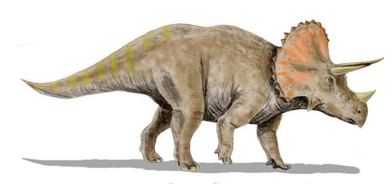
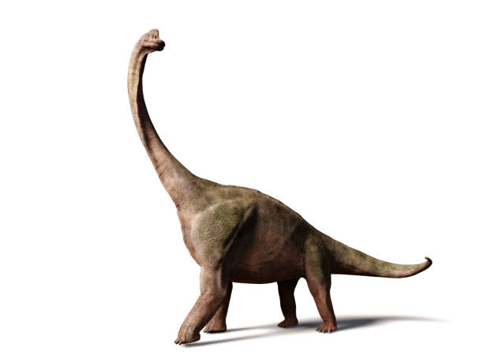

Animals prehistòrics
Dinosaures
Tirannosaure
Enllaç Viquipèdia
Triceratops
Enllaç Viquipèdia

Diplodocus
Enllaç Viquipèdia

Passos per cercar dinosaures a Internet
Obrir el navegador
Escriure "Dinosaures" al cercador
Fer clic als enllaços
Altres enllaços
Galeria de dinosaures.
Contacta amb mi.